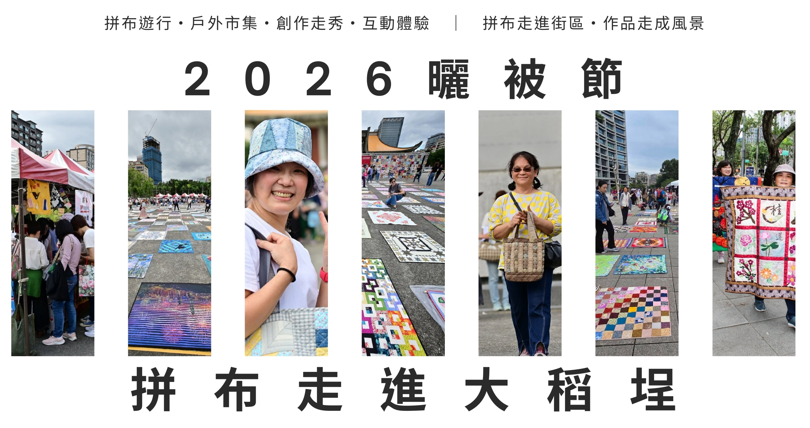

DATE
2026.11.13－11.15
星期五至星期日

Event Information
DATE
星期五至星期日
VENUE
迪化街永樂廣場
大稻埕碼頭廣場
THEME
Quilts Come to Dadaocheng
About the Festival
自 2018 年起，曬被節由台灣不同城市的拼布老師接力主辦， 至今已邁入第九屆。2025 年起由台灣國際拼布友好會接續承辦， 延續讓拼布作品走出教室、展場與家中， 進入公共空間與人群相遇的精神。
2026 年以「拼布走進大稻埕」為主題， 由台灣國際拼布友好會與永樂商圈發展協會共同主辦， 結合永樂市場、迪化街及大稻埕街區特色， 讓拼布作品成為城市風景的一部分。
Three-Day Program
11 / 13
拼布市集、手作材料市集、 創作者交流、小型曬被展示、 記者會及媒體拍攝等活動。
11 / 14
延續市集與創作交流， 並規劃走秀或互動活動， 讓拼布與手作走進街區。
11 / 15
大稻埕碼頭廣場集合報到， 進行曬被展示、作品交流及拍照， 下午拿著作品遊行至迪化街、永樂市場及永樂廣場。
※ 實際時間與活動內容將配合整體安排調整， 完整流程以主辦單位後續公告為準。
How to Join
募集 100 × 100 公分拼布作品。 作品須具備表布、鋪棉、裡布三層結構並完成壓線， 有無包邊皆可。
前往報名 →邀請創作者穿戴或攜帶親手製作的拼布服飾、 手作配件、拼布包包或纖維工藝作品， 用動態方式分享創作。
詳細辦法後續公告
延續 2025 年活動， 邀請大家製作可正常使用的小零錢包， 於活動現場展示與交換， 剩餘作品將整理後捐贈公益單位義賣。
詳細辦法後續公告
Collaborative Quilt Relay
本屆前一階段已展開「拼布接力創作計畫」， 預計已有 96 件作品加入曬被行列。 現在也同步開放更多 100 × 100 公分作品報名， 邀請創作者一起把拼布帶到大稻埕。
Organizers